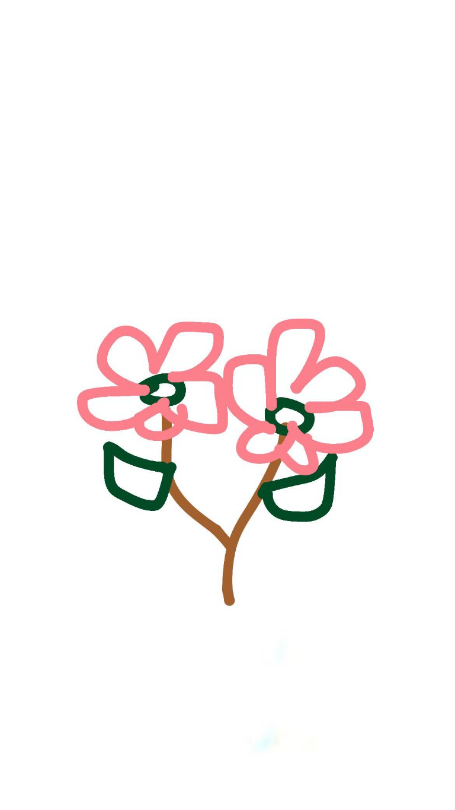
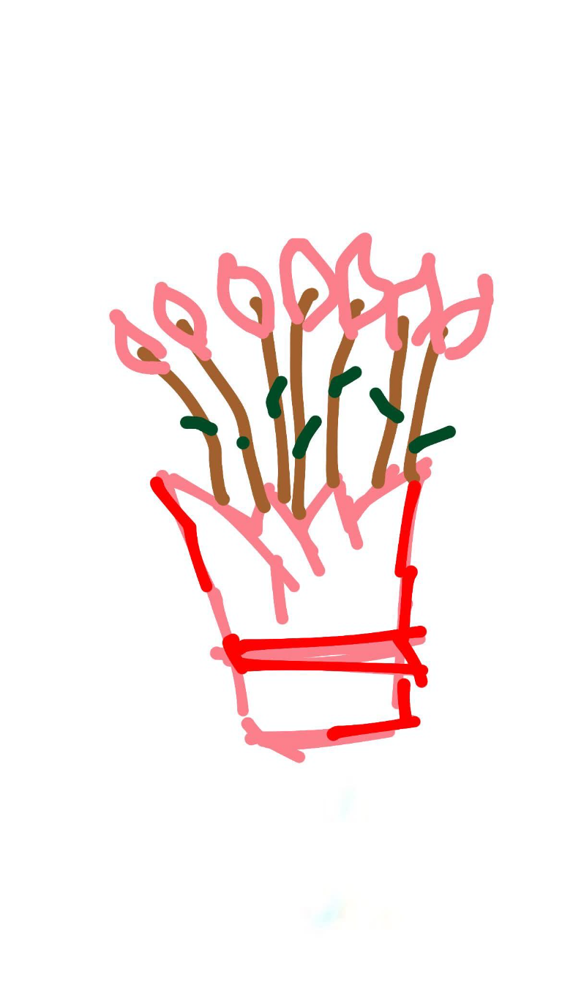
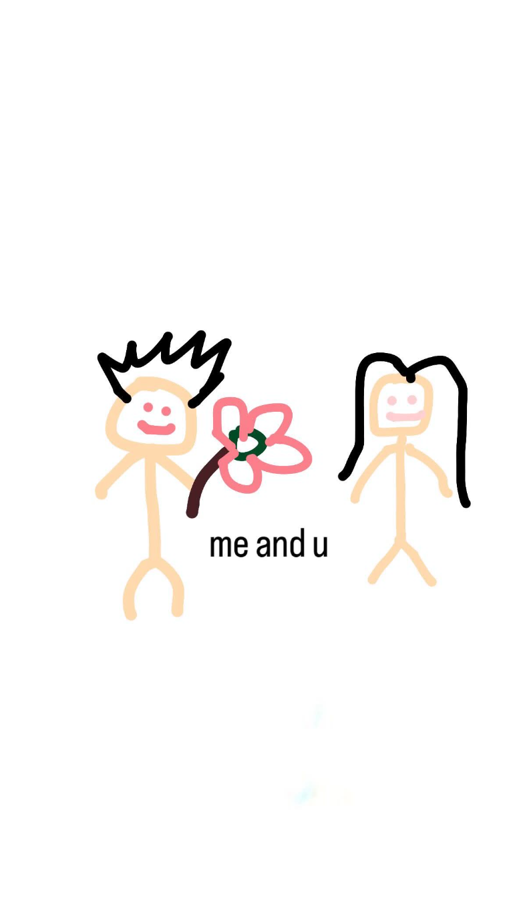
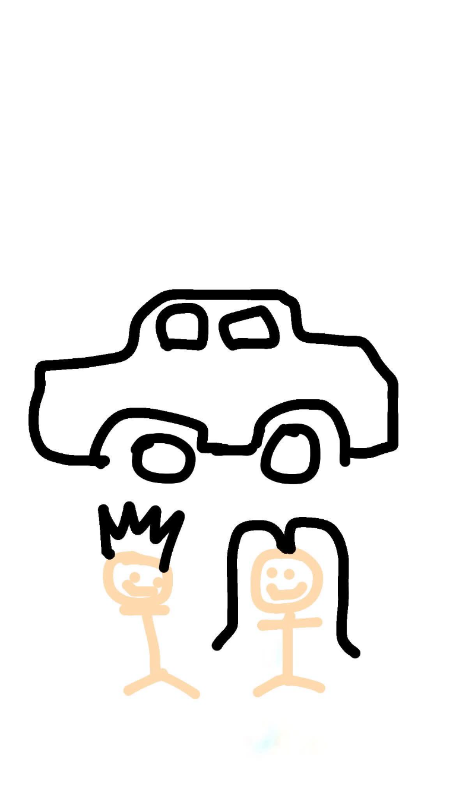
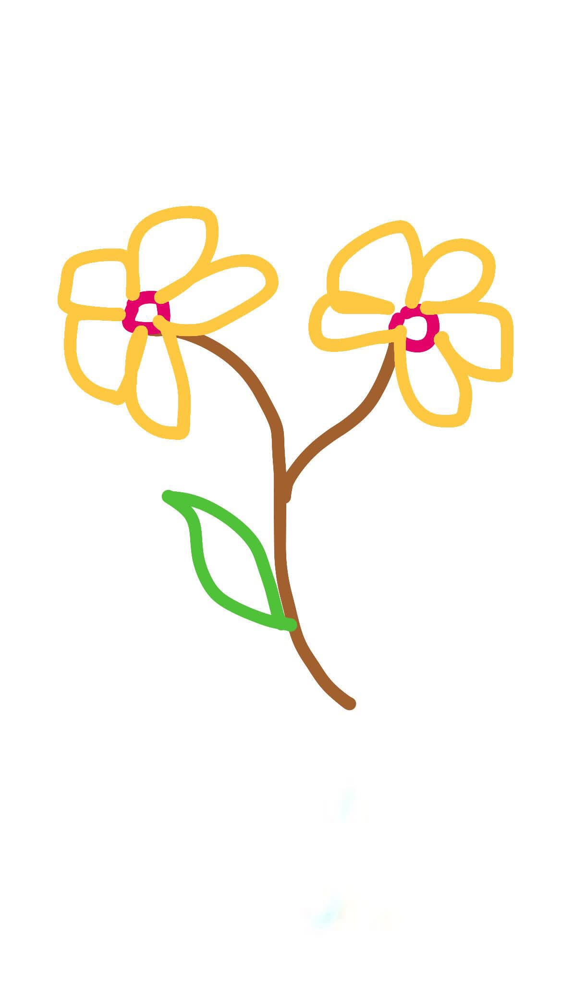
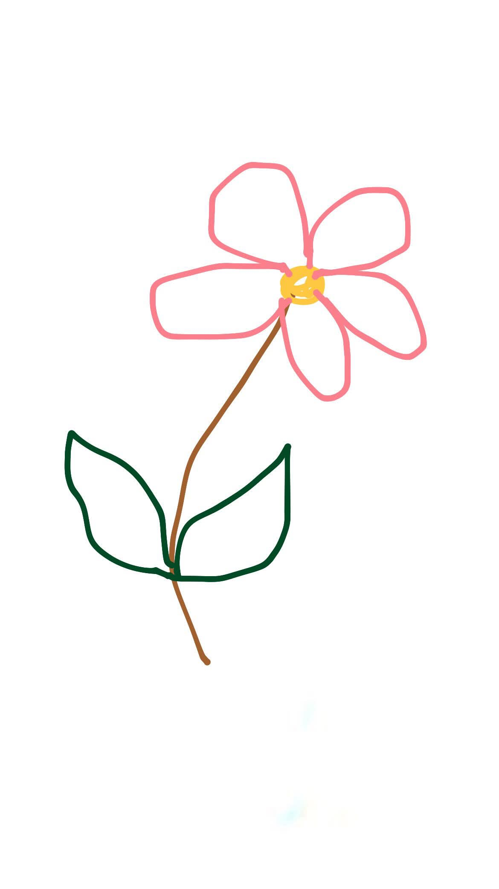
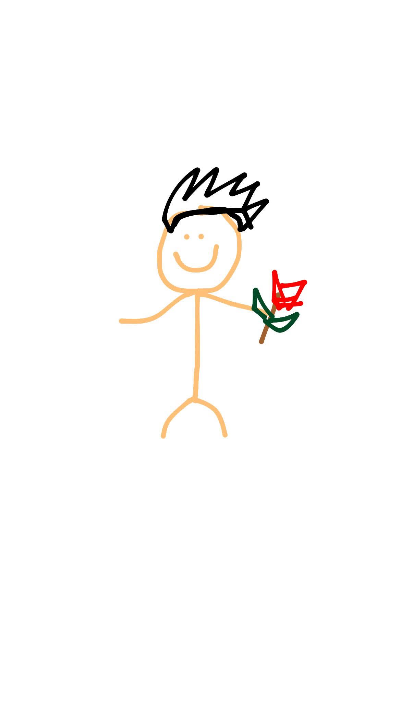
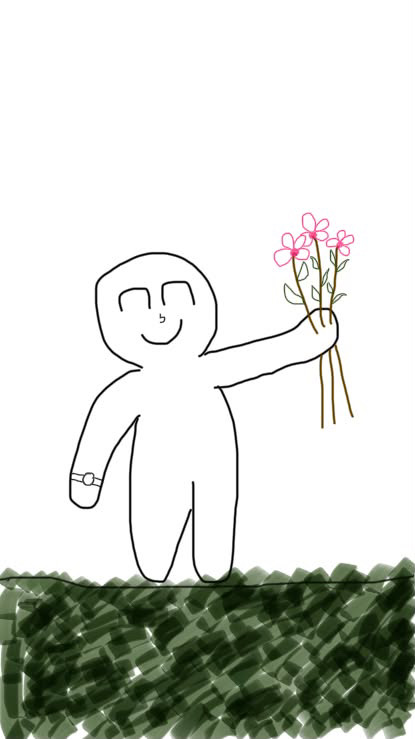
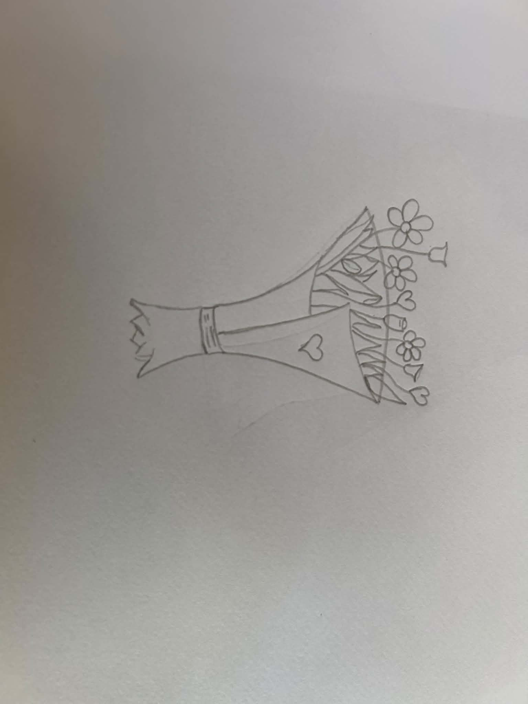

Happiest 22nd Birthday, my Elle. So ‘diba sabi ko sayo may birthday gift ako, and ito yun. So habang nag eexam ikaw, ginagawa ko ito and sana magustuhan mo. If you can see may mga circle sa baba, and every dots ay mayroon na specific na page, and syempre mamaya mo na tingnan and tapusin mo muna yung letter ko sa’yo. So it’s been 45 (adjusted na hanggang birthday mo but noong ginagawa ko ito hindi ko pa ikaw kilala ng 45 days) days since nakilala ko ikaw, it feels like a year na, not just a year but years. If iisipin natin, parang ang tagal tagal na ng 45 days. So ang wish ko lang for you ay sana matupad lahat ng wish mo, sana happy ikaw palagi, sana mabuhay ikaw matagal at matupad yung mga pangarap mo sa buhay. I wish all the best, all the best for the best person sa mundong ibabaw na ito. Love ko ikaw and enjoy the rest of your dayy. Mwa !


So here’s your first gift elle, naalala mo yung dalawang ito? yung dalwang pink na flowers ay sinadya ko yan dalawa kasi one flower ay ikaw, one ay ako. Pink is the color kasi pink is your favorite color and green naman for leaves syempre and brown for stem.


Remember this elle, ito naman ay noong gabi rin na binigay ko sayo yung first flower ko na gift sayo and yung gabi na yun we talked about something what we want, like yung sayo lomi dito sa batangas. Sabi ko ay isasama ko ikaw sa favorite ko na lomian and favorite ko na tambayan. Ayan yung gabi na hinanap mo yung ride ko kaya kinuha ko car ko for you para makagala tayo, naaalala ko sobrang saya ko niyan kasi tinawag mo ako na baby nung gabing iyan

This flower naman ay yung napansin mo na it’s yellow naman, it symbolizes warmth kasi for me, yellow is the best color to symbolize warmth, and ayan yung naramdaman natin na iba yung warmth natin sa isa’t isa, one of my favorite na ibinigay ko sayo

This flower naman elle ay random siya, random na binigay ko sayo kasi ang sarap sa feeling kapag nagbibigay ng random na flower sayo kasi naaappreciate mo talaga ng sobra sobra, ayan yung flower na walang gaanong effort pero naaappreciate mo ng sobra sobra, thank you elle 🥹

Remember thisss? hahahahahaha this flower ay rose, dibaa ang cool ko diyan yung hair ko ay nakataas and may hawak na rose, ganiyan ako kapag magbibigay sayo ng rose na one piece lang. Pero alam ko sa sarili ko na kahit iisa iyan, alam ko na sobra mo gusto yung flower na yan at naaappreciate mo, thankful ako sobra sayo elle

Elle, ito naman yung time na may binigay ako ma gift sayo kasi sobrang hardworking ikaw and parang napapagod ikaw so umisip ako way to boost your mind and mood, if im not mistaken first gift ko sayo na letter tapos nag drawing ako nito para gawing picture sa letter, nag drawing ako niyan kasi gusto ko effort ko and hindi lang basta kinuha sa google or sa other social media, gusto ko unique and for you lang talaga. ito yung pinaka favorite ko sa lahat ng drawing ko kasi it’s me talaga, may watch ako may hawak na flowers and nasa grass, tapos sobrang happy. Ganiyan smile ko palagi kapag nadiyan ikaw sa aking tabi

And lastly elle, pinaka favorite mo. Simple pero favorite mo, naulit mo pa sa akin na ito yung pinaka favorite mo and tinanong ko pa ikaw na kahit walang color? and you said yes, im so masaya kasi i thought it is not good enough kasi wala nga color pero guess what, ito pa yung pinaka favorite mo 🥹 im so lucky talaga na appreciative ikaw, kahit sobrang simple, nagustushan mo. Im so lucky to have you in my life, elle. I am so lucky to have you.